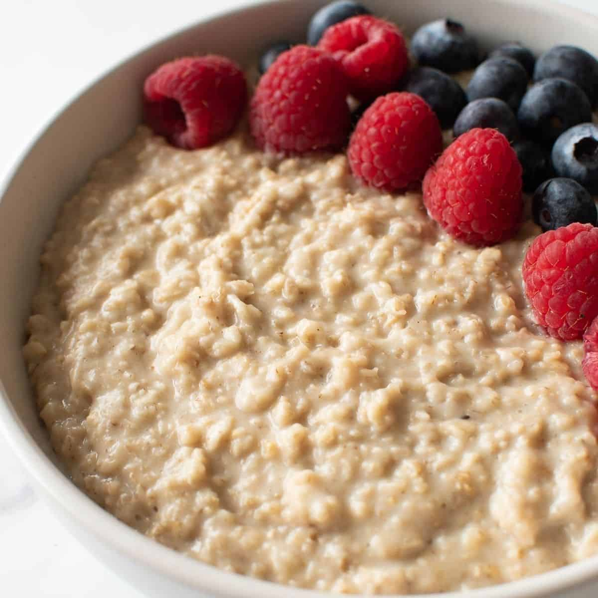

Protein powder oatmeal

Description
This protein oatmeal is thick, creamy, and packs in over 30 grams of protein per serving!
Easy to customize and makes a healthy and filling breakfast.
Ingredients
- 1/2 cup rolled oats
- 1/4 cup protein powder
- 1 cup water
- 1/2 cup milk any milk works
- 1/4 teaspoon salt
Steps
- Add the oats, water, milk, and salt to a small saucepan or microwave-safe bowl.
- Bring the oats to a boil then once boiling, reduce to a simmer. Let the oats simmer until they are nice and thick.
- Remove the oatmeal off the heat and whisk in the protein powder.
- Add toppings and enjoy immediately.